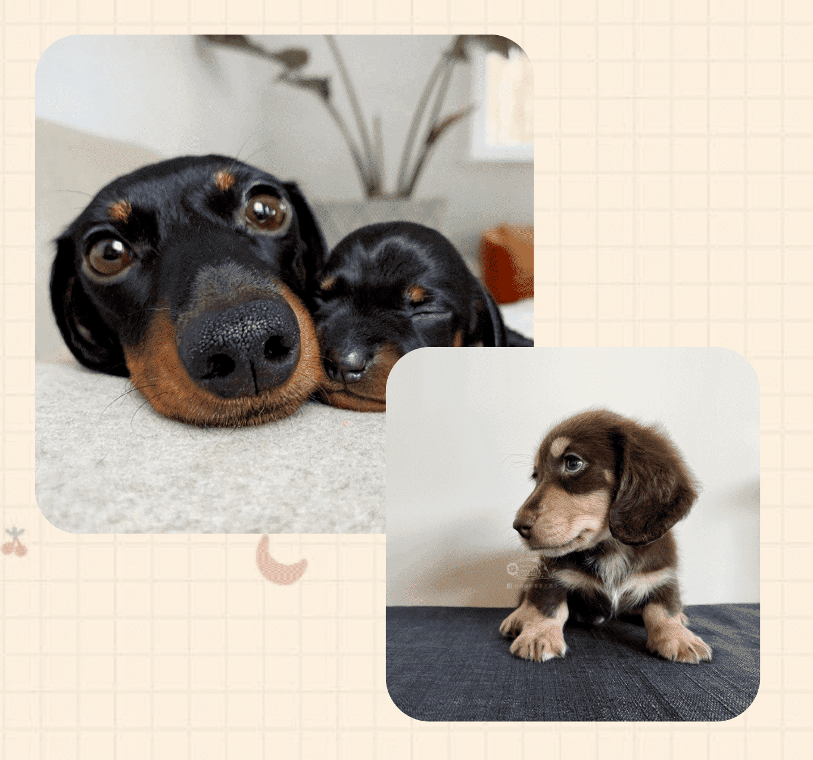

臘腸犬
（又稱達克斯獵犬（德語：Dachshund）其名源於德國，「Dachs」意思是獾，「Hund」意思是狗，原意「獾狗」）
此品種被發展為嗅獵、追蹤或捕殺獾類及其他穴居動物
頭部：頭骨狹長，頭頂微呈拱起。
尾巴：脊椎端延續，無明顯彎曲，隨著心情落在不同高低位置。
眼睛：深琥珀或黑栗色的橢圓眼型，藍色瞳孔色只在大理石臘腸身上看的到。
耳朵：雙耳垂長，位置靠近頭頂，大小適中的圓潤造型，長度落在頸部。
身體：軀幹長筋骨粗狀結實，背部僅可能呈一直線，胸部肌肉發達。
毛皮：柔軟有光澤，少數波浪狀毛出現在顎下或身軀下，耳朵末端前支後側的毛較長。

活潑好動
臘腸犬活潑好動的天性，使得它在外出時看到草坪都可以讓它興奮半天，雖然臘腸犬喜歡運動，但是運動也是需要適量的，因此主人要控制好它的運動時長。
性格獨立
臘腸犬不會特別黏人，飼養起來也會比較輕鬆。不過因為它的獨立性強，很多時候都會有自己的想法，所以在下達指令的時候，主人需要和臘腸犬適當的溝通。
適應力好
臘腸犬的適應能力好，來源於它獨立的性格，因此，當它到達一個新環境的時候，它會比其他的狗狗更快的適應。不用過多的擔心它會因為環境不適應，出現的各種問題。
訓練配合度高
雖然臘腸犬的智商排名不是很前，但是它真的很聰明，主人下的指令能迅速理解並完成，也很喜歡訓練，訓練的配合度和完成度高。


勿跳上跳下
臘腸犬重心及反應較差，容易發生骨折，在客廳的沙發區，可放個小凳子，緩衝四肢與地面接觸時的衝擊力。
抱狗要托臀
由於狗狗的體型較長，因此千萬不要只從前肢抱起，一定要一手先托著臀部，一手環抱前胸來抱起，即可避免增加身體重量的負擔。
梳理毛髮
長毛臘腸犬腋下與耳下方的毛髮濃密要常梳理，若經常發現不明打結問題，要特別留意。
適量運動
建議以短程、頻繁的散步方式，或游泳比較適當，因為當牠們的體重增加的話，也會增加其關節的負擔。

中耳炎/外耳炎
臘腸狗因為是垂耳狗，耳道不通風，非常容易藏污納垢，滋生細菌，進而使狗狗耳道發炎。
當狗狗耳朵不舒服時，就會出現甩頭、抓耳朵、歪頭的情形，毛爸媽千萬要注意喔！
遺傳性視網膜退化症
臘腸狗是遺傳性視網膜退化症的好發品種之一。
這種疾病初期會讓狗狗的視力退化，讓狗狗在黑暗中對光線的敏感度變差，後期甚至還會引發白內障，導致失明。
椎間盤突出
因為身體長，腿卻很短的關係，臘腸狗的腰椎比其他的狗狗負擔還要來得大，常會有脊椎彎曲及椎間盤突出的問題，嚴重的話，還可能會癱瘓！
根據統計，長毛臘腸是椎間盤突出好發率第一名狗狗品種，第二名則是短毛臘腸。